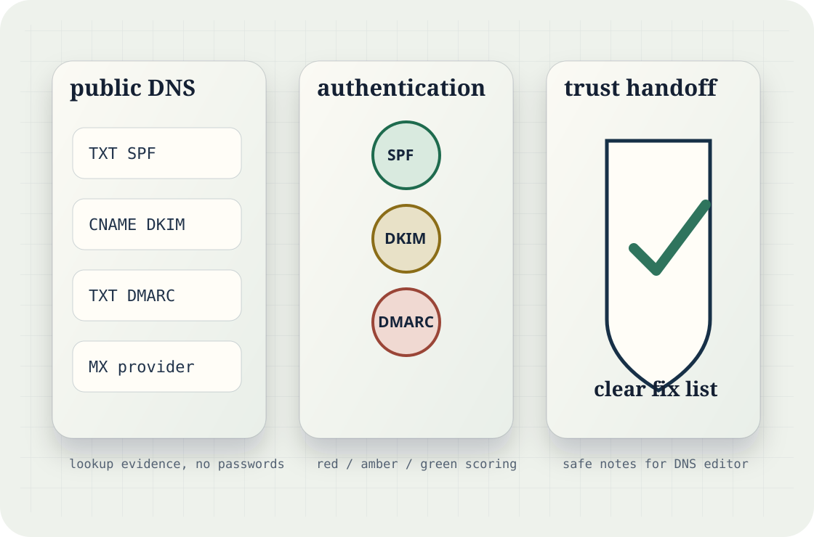
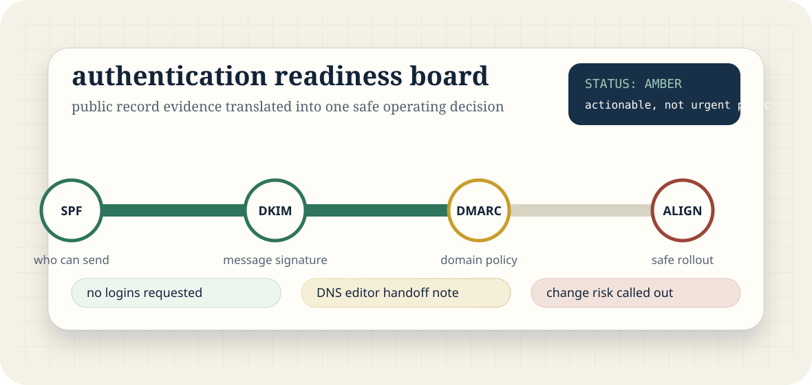
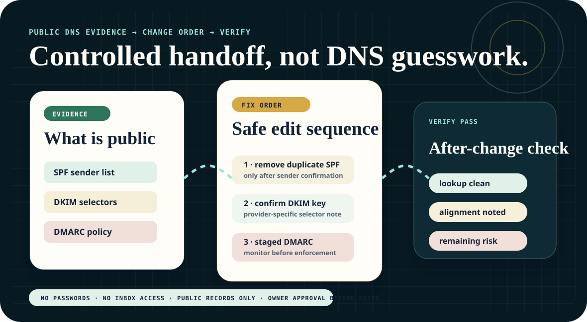
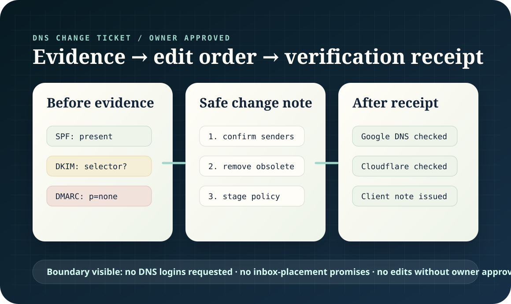
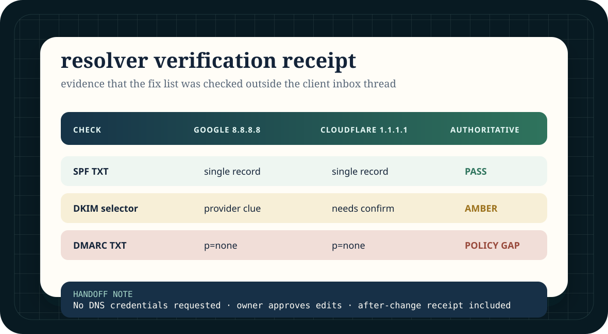
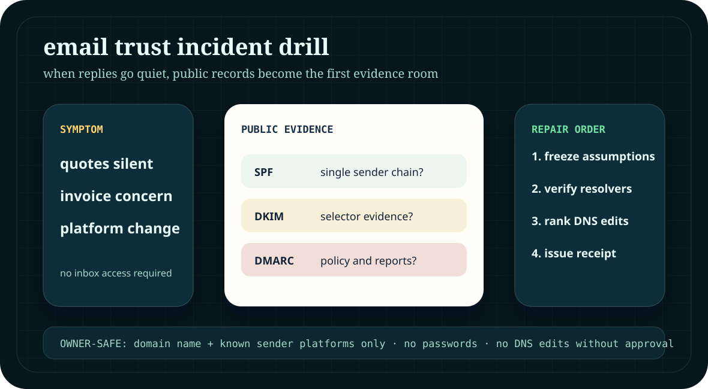
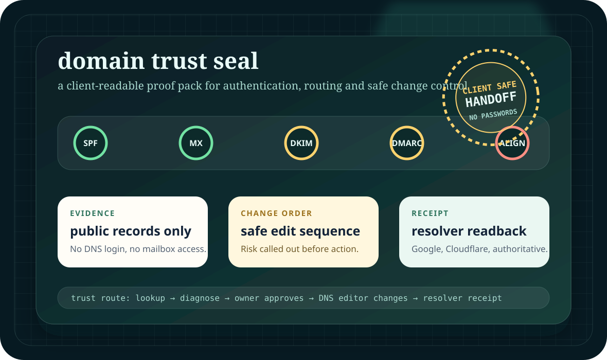

The pain
Weak or missing authentication makes business email harder to trust. Most owners cannot tell whether their DNS is helping or hurting them.
For small businesses sending quotes, invoices and newsletters
A plain-English SPF, DKIM and DMARC readiness check with provider clues, priority fixes and a clean handoff note for your web or IT person.
Infrastructure view
Instead of sending a raw DNS dump, the snapshot maps the visible chain: which systems are authorised to send, whether DKIM clues line up, how DMARC is currently behaving, and what a cautious DNS editor should do first.

Weak or missing authentication makes business email harder to trust. Most owners cannot tell whether their DNS is helping or hurting them.
We check visible SPF, DKIM and DMARC posture, identify provider clues, score the domain and provide a safe priority fix list.
Small firms, ecommerce operators, accountants, trades, consultants and agencies that rely on quotes, invoices, booking links or campaign replies.
Buyer confidence layer
The new board makes the commercial value more tangible: it frames the snapshot as a controlled trust check across SPF, DKIM, DMARC and rollout alignment, with safe boundaries visible before anyone emails.
See the one-page output ↓
Sample output
The snapshot deliberately avoids jargon dumps. It names the visible issue, explains why it matters, and gives the next safe action without promising inbox placement.
p=none; useful for monitoring, not enforcement.Fix handoff layer
The new proof section makes the service feel operational: public evidence is captured, risky edits are separated from safe checks, and the client gets a simple before / fix / verify trail.

Operational trust layer
This upgrade makes the paid next step more concrete: before evidence, owner-approved edits, resolver checks and an after-change receipt are shown as one professional handoff.

Delivery system
The service is designed around public DNS lookups and a consistent reporting template, so checks can be completed quickly while still leaving a careful audit trail.
Verification receipt
The fix pack now has a stronger close: SPF, DKIM and DMARC evidence checked across public resolvers, written into a clean receipt, and handed back without asking for DNS logins or private mailbox access.

New conversion layer · incident drill
The site now shows a sharper operational moment: a quote stops getting replies, invoice mail looks suspicious, or a campaign platform changes. The service sells a calm public-record drill before anyone starts guessing inside DNS.

New proof layer · domain trust seal
The page now gives the fix pack a stronger premium object: a visual trust route from public lookup to owner-approved edits and resolver receipt. It makes the buyer feel the operational discipline before they hand over a domain.

Boundary and privacy
Review public DNS records, explain visible authentication posture, and prepare practical next steps for whoever controls the domain.
No guaranteed inbox placement, no deceptive sending advice, no cold-spam infrastructure, and no changes made without domain-owner approval.
Only the domain name, known email platform and recent change notes. Do not send passwords, DNS logins or private mailbox contents.
New visual layer · trust circuit
The page now makes SPF, DKIM and DMARC feel like an operating map: visible checkpoints, pass/fail friction, and a plain-English repair order.
Fast validation path
The £95 snapshot is designed as a small first step. If you need implementation support afterwards, the fix pack and monitoring option are quoted separately.
Email the domain for a snapshot